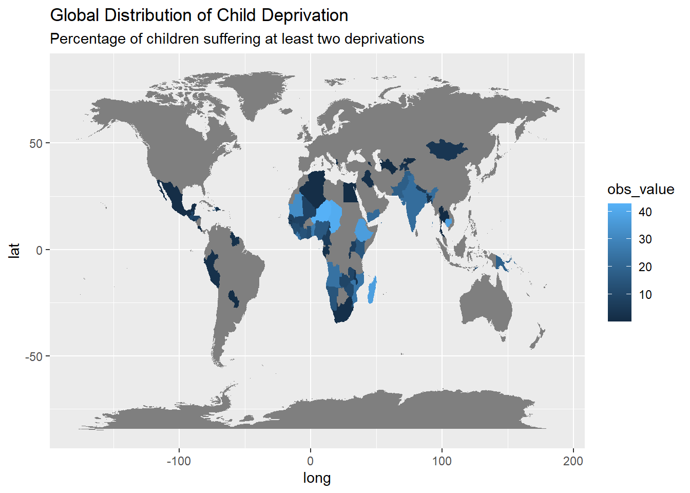
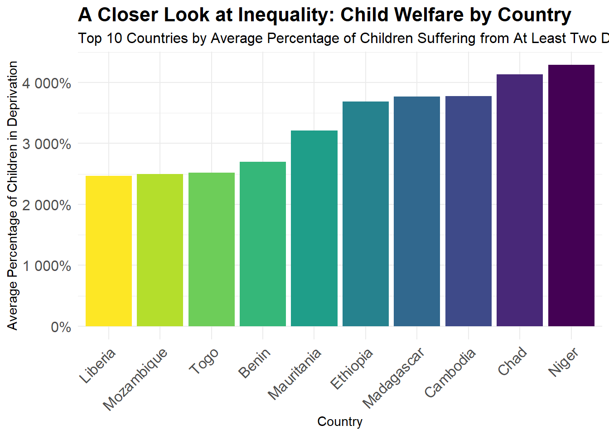

Quarto Assignment MT5000
Shadows and Light: Mapping the Landscape of Child Deprivation Worldwide
Insights from the World Map
The map displayed below uses a color gradient to denote the intensity of child deprivation. Darker shades indicate higher percentages of children experiencing at least two deprivations, signaling regions where child welfare needs urgent attention. This visual tool allows policymakers, researchers, and the public to identify focus areas for resource allocation and intervention efforts.
Insights from the Bar Graph
The visualization below illustrates the top ten countries facing severe child deprivation issues. Each bar represents a country and is color-coded to distinguish between them easily. The height of the bar indicates the average percentage of children suffering from at least two types of deprivation, providing a clear comparison of the severity across these nations.
By observing the data, we can see significant variation in child welfare across different regions. Countries with higher bars indicate a greater average percentage of children facing multiple deprivations, suggesting a higher priority for intervention in these areas.

Scatter Plot Explanation
The scatter plot below visualizes the relationship between military expenditure as a percentage of GDP and GDP per capita for the selected countries. Each point on the plot represents a data point for one of the countries in a given year, allowing us to observe trends over time and across different levels of economic development.
Analysis and Discussion
The scatter plot with regression lines for each country, the visualization uncovers patterns and raises questions:
Ethiopia: Ethiopia, a country with historical conflicts and recent economic expansion, showcases a pattern of military spending reflective of its need to maintain national security while propelling forward its developmental agenda.
Madagascar: Madagascar’s unique position as an island nation with limited regional conflicts allows it to potentially prioritize economic development over military expansion, a hypothesis that its position on the scatter plot may support.
Cambodia: Cambodia, with its post-conflict rebuilding phase and growing economic presence in Southeast Asia, presents an intriguing case of balancing military modernization with significant international investment in development.
Chad: Chad’s involvement in regional security initiatives in the face of economic challenges presents a complex interplay between defense commitments and the pursuit of economic stability.
Niger: Niger faces unique security challenges with its strategic location and the threat of extremism. Its military expenditure reflects the delicate balance between ensuring security and striving towards economic development.
Recommendations
Given the observed trend, countries should evaluate the efficiency and necessity of their military budgets, especially when economic development goals remain unmet. Strategic reallocation of funds could support health, education, and infrastructure, potentially boosting economic growth more effectively than equivalent spending on defense. International cooperation and regional stability initiatives can also reduce security threats, decreasing the need for high military expenditure.
Policymakers should also consider comprehensive economic reforms that balance security needs with economic development, leveraging detailed data analyses like this to guide decisions.